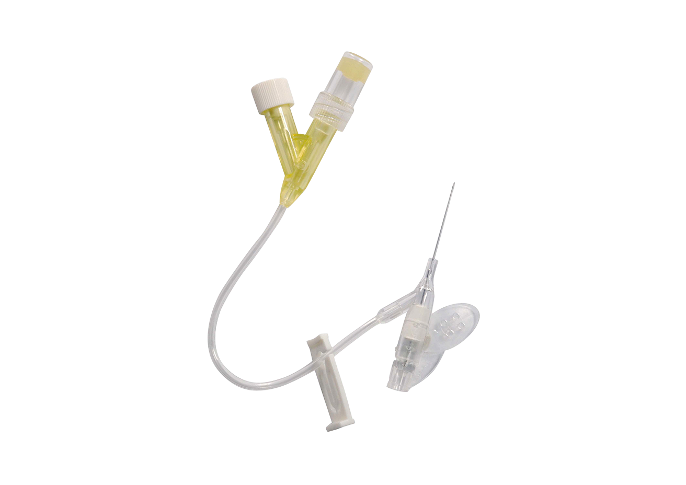

⑧政策脊柱集采已落地，降幅较关节温和Spinal VBP implemented; price cuts milder than joints
🚀 30秒电梯演讲
"This is a spinal implant/ˈspaɪnəl ˈɪmplænt/ — metal screws and rods that hold the spine/spaɪn/ in place after a back injury. Think of it like an internal brace. The company is number one in China for this kind of product."
📢 SAY THIS:
"This is a spinal implant/ˈspaɪnəl ˈɪmplænt/ system — metal screws and rods/skruːz ænd rɑːdz/ used to stabilize the spine/spaɪn/ after fractures/ˈfræktʃərz/ or worn-out spinal discs/dɪˈdʒenərətɪv dɪsk dɪˈziːz/ . Weigao Orthopedics is the market leader/ˈmɑːrkɪt ˈliːdər/ in China for orthopedic implants/ˌɔːrθəˈpiːdɪk ˈɪmplænts/ ." ★ 国内第一
The orthopedic unit was listed on China's STAR Market in 2021. Joint procurement cut prices 50-80%, but we compensate with higher volume. Need to closely monitor gross margin changes. Spinal products are less affected.
"Why did you say Weigao is number one in orthopedics?"
👆 点击看参考答案"Weigao Orthopedics is listed on China's STAR Market and holds the largest market share in orthopedic implants in China — including spinal systems, joint replacements, and trauma devices. They have been the domestic leader for many years."
④患者骨关节炎中老年患者Elderly patients with osteoarthritis/ˌɑːstioʊɑːrˈθraɪtɪs/
⑤市场中国年关节手术超100万例1M+ joint replacement/dʒɔɪnt rɪˈpleɪsmənt/ surgeries pe/piː iː/ r year in China
⑥地位国内份额第一，自研超高分子聚乙烯Domestic #1; self-develope/piː iː/ d UHMWPE/juː eɪtʃ em dʌbəljuː piː iː/ material
⑦频率终身植入（寿命15-20年）Permanent implant, 15-20 year lifespan/ˈlaɪfspæn/
⑧政策集采重灾区：降幅50-80%VBP hit hard: 50-80% price cut/praɪs kʌt/
🚀 30秒电梯演讲
"This is an artificial joint — it replaces a worn-out knee or hip. When the natural joint is too damaged, a surgeon puts this in instead. The company is China's biggest maker. Government bulk buying cut prices 50 to 80 percent, so now they sell a lot more to make up for it."
📢 SAY THIS:
"This is a joint replacement/dʒɔɪnt rɪˈpleɪsmənt/ implant — used when a patient's cartilage/ˈkɑːrtɪlɪdʒ/ is completely worn out from osteoarthritis/ˌɑːstioʊɑːrˈθraɪtɪs/ . Weigao makes both knee/niː/ and hip replacements/hɪp rɪˈpleɪsmənts/ . This product is heavily affected by China's volume-based procurement/ˈvɑːljuːm beɪst prəˈkjʊərmənt/ — prices dropped 50 to 80 percent." ⚠️ 集采重灾区
Joint procurement is the biggest financial pressure on our orthopedics business. Strategy: cut costs, increase volume, and develop premium new products not yet in procurement. Domestic production of UHMWPE raw material is the key breakthrough.
"You mentioned the price dropped 50 to 80 percent. How does Weigao survive that?"
👆 点击看参考答案"The strategy is to compensate with volume — sell much more at a lower price. Weigao also focuses on cost reduction through supply chain optimization and developing new premium products that are not yet included in the procurement list. As Finance Director, I need to monitor the gross margin very closely."
⑥地位公司自研超高分子聚乙烯材料Self-develope/piː iː/ d UHMWPE/juː eɪtʃ em dʌbəljuː piː iː/ material
⑦频率终身植入Permanent implant/ˈpɜːrmənənt ˈɪmplænt/
⑧政策集采覆盖，但单髁降幅较全膝温和VBP covered; price cut milder than total knee
🚀 30秒电梯演讲
"This is a partial knee replacement — it only fixes one side of the knee, not the whole thing. That means less cutting, faster healing, and a more natural feeling. The company uses a special long-lasting plastic they developed themselves."
📢 SAY THIS:
"This is a unicondylar knee system/ˌjuːnɪˈkɑːndɪlər niː ˈsɪstəm/ — also called a partial knee replacement/ˈpɑːrʃəl niː rɪˈpleɪsmənt/ . Unlike a total knee replacement, it only resurfaces one side of the knee — preserving/prɪˈzɜːrvɪŋ/ the healthy cartilage on the other side. It results in a more natural feeling knee and faster recovery/ˈfæstər rɪˈkʌvəri/ . Weigao uses vitamin E oxidized polyethylene/ˈvaɪtəmɪn iː ˈɑːksɪdaɪzd ˌpɑːliˈeθɪliːn/ to extend the product's lifespan." ★ 公司超高分子聚乙烯自研
③功能替换磨损髋关节球窝结构Replaces worn hip ball-and-socket joint/bɔːl ænd ˈsɑːkɪt/
④患者髋关节骨折/股骨头坏死患者Hip fracture / femoral head necrosis/ˈfemərəl hed nɪˈkroʊsɪs/
⑤市场中国髋关节手术年超50万例500K+ hip procedures pe/piː iː/ r year in China
⑥地位专为亚洲人体型设计Designed specifically for Asian anatomy/əˈnætəmi/
⑦频率终身植入（寿命15-20年）Permanent implant/ˈpɜːrmənənt ˈɪmplænt/ , 15-20 year lifespan
⑧政策关节集采降幅50-80%Joint VBP: 50-80% price cut
🚀 30秒电梯演讲
"This is part of a hip replacement — the metal piece that goes inside the thigh bone. The company designed it to fit Asian body shapes, which are different from Western ones."
📢 SAY THIS:
"This is a femoral stem/ˈfemərəl stem/ — the component of a hip replacement/hɪp rɪˈpleɪsmənt/ that inserts into the femur/ˈfiːmər/ — the thigh bone. The top connects to an artificial femoral head/ɑːrtɪˈfɪʃəl ˈfemərəl hed/ that replaces the hip ball-and-socket joint/bɔːl ænd ˈsɑːkɪt dʒɔɪnt/ . Weigao designed this specifically for Asian patients — the proportions fit Asian anatomy/əˈnætəmi/ better than Western designs." ★ 专为亚洲人体型优化
⑤市场创伤是骨科最大细分Trauma is the largest orthope/piː iː/ dic sub-segment
⑥地位国内份额领先Leading domestic market share
⑦频率植入后愈合可取出，或终身保留Removable after healing or left pe/piː iː/ rmanently
⑧政策创伤集采已落地Trauma VBP implemented
🚀 30秒电梯演讲
"These are the metal pieces that hold broken bones together — plates/pleɪts/ , screws, and nails. When someone breaks a bone in a car accident or a fall, a surgeon uses these to keep the pieces in place while the bone heals."
📢 SAY THIS:
"This is Weigao's trauma fixation/ˈtrɔːmə fɪkˈseɪʃən/ product range. These devices hold fractured bones/ˈfræktʃərd boʊnz/ in place while they heal. You can see locking plates/ˈlɑːkɪŋ pleɪts/ — like the green humerus plate — intramedullary nails/ˌɪntrəˈmedjʊləri neɪlz/ , bone pins/boʊn pɪnz/ , and cable systems/ˈkeɪbəl ˈsɪstəmz/ . These are similar to what Maxim has in his leg — 16 screws and plates/skruːz ænd pleɪts/ !" ⚠️ Maxim腿里就是这类产品！
⑧政策暂未集采，国产替代政策支持Not yet in VBP; import substitution/ˈɪmpɔːrt ˌsʌbstɪˈtuːʃən/ supported
🚀 30秒电梯演讲
"These fix torn muscles and tendons/ˈtendənz/ from sports injuries — like a damaged shoulder or knee. The anchor screws into the bone and the thread pulls the torn tissue back. Some of these slowly dissolve in the body, so you don't need a second surgery to remove them."
📢 SAY THIS:
"This is Weigao's sports medicine/spɔːrts ˈmedɪsɪn/ product range — used to repair ligaments/ˈlɪɡəmənts/ , tendons/ˈtendənz/ , and meniscus/mɪˈnɪskəs/ injuries. The blue device is a suture anchor/ˈsuːtʃər ˈæŋkər/ — it anchors soft tissue back to bone. The white one is a bioabsorbable interference screw/ˌbaɪoʊəbˈzɔːrbəbəl ˈɪntərfɪrəns skruː/ — it gradually dissolves inside the body over time, so no second surgery to remove it."
③功能填充骨缺损，促进新骨再生Fills bone gaps and helps new bone grow back
④患者骨折/骨肿瘤切除后骨缺损患者Patients with bone defects/boʊn ˈdiːfekts/
⑤市场骨修复材料市场年增15%+Bone repair market growing 15%+ pe/piː iː/ r year
⑥地位国产品牌前列，有rhBMP-2高端版Leading domestic brand; has advanced rhBMP-2 version
⑦频率一次性植入，被身体逐步吸收替换Single implant; body gradually replaces it with real bone over 6-18 months
⑧政策未被集采，高附加值产品Not in VBP; high value-added product
🚀 30秒电梯演讲
"This is man-made bone. When a piece of bone is missing, the surgeon fills the gap with this. Over 6 to 18 months, your body slowly turns it into real bone. The advanced version has a special protein that makes new bone grow faster."
📢 SAY THIS:
"This is Weigao's bone repair material/boʊn rɪˈpeər məˈtɪəriəl/ range — synthetic bone substitutes made from calcium phosphate/ˈkælsiəm ˈfɑːsfeɪt/ . The porous structure allows bone cells and blood vessels/boʊn selz ænd blʌd ˈvesəlz/ to grow into the implant. Over 6 to 18 months, the body gradually replaces it with natural bone/ˈnætʃərəl boʊn/ . The advanced version carries rhBMP-2/ɑːr eɪtʃ biː em piː tuː/ — a bone morphogenetic protein/boʊn ˌmɔːrfoʊdʒɪˈnetɪk ˈproʊtiːn/ that actively stimulates bone growth/ˈstɪmjʊleɪts boʊn ɡroʊθ/ ." ★ 基因工程制备，国产高端
⑤市场微创脊柱手术渗透率快速上升MIS spine/spaɪn/ surgery adoption rising fast
⑥地位配套脊柱植入物销售Bundled with spinal implant/ˈspaɪnəl ˈɪmplænt/ sales
⑦频率可复用器械Reusable instrument/ˈriːjuːzəbəl/
⑧政策器械不在集采范围Instruments not in VBP
🚀 30秒电梯演讲
"This is a tool for minimally invasive/ˈmɪnɪməli ɪnˈveɪsɪv/ spine surgery — it gently holds the muscle open so the surgeon can work through a tiny cut instead of a big one. The clear material lets X-rays pass through during surgery."
📢 SAY THIS:
"This is a minimally invasive spinal retractor/ˈmɪnɪməli ɪnˈveɪsɪv ˈspaɪnəl rɪˈtræktər/ — a surgical instrument that creates a working channel in the spine without a large incision. The adjustable arms/əˈdʒʌstəbəl ɑːrmz/ gently spread apart the muscle tissue/ˈmʌsəl ˈtɪʃuː/ so the surgeon can access the vertebrae/ˈvɜːrtɪbreɪ/ . The transparent materials/trænsˈpærənt məˈtɪəriəlz/ allow X-ray visibility during surgery. This is part of Weigao's minimally invasive spine surgery/ˈmɪnɪməli ɪnˈveɪsɪv spaɪn ˈsɜːrdʒəri/ product line."
"This is a PEEK/piːk/ anchor — a small screw made of strong medical plastic. It goes into the bone, and the threads attached to it pull the torn tissue back into place. Very common in shoulder and knee injuries from sports."
📢 SAY THIS:
"This is a PEEK suture anchor/piːk ˈsuːtʃər ˈæŋkər/ . PEEK stands for polyether ether ketone/ˌpɑːliˌiːθər ˌiːθər ˈkiːtoʊn/ — a strong medical-grade plastic. The anchor is screwed into the bone, and the suture threads attached to it are used to reattach torn ligaments or tendons/riːəˈtætʃ tɔːrn ˈlɪɡəmənts/ back to the bone. Common in shoulder/ˈʃoʊldər/ and knee sports injuries/niː spɔːrts ˈɪndʒərɪz/ ."
③功能填充骨缺损，6-18个月被新骨替换Fills bone defects/boʊn ˈdiːfekts/ ; replaced by new bone in 6-18 months
④患者骨缺损/骨折不愈合患者Patients with bone defects/boʊn ˈdiːfekts/ or non-union fractures/ˈfræktʃərz/
⑤市场骨修复年增15%+Bone repair market growing 15%+/year
⑥地位有注射型和块状两种剂型Available in injectable and block forms
⑦频率一次性植入Single-use/ˈsɪŋɡəl juːs/ implant
⑧政策未被集采Not in VBP
🚀 30秒电梯演讲
"These are bone fillers — the white blocks fill holes in bone and slowly get replaced by real bone. There's also a paste version that can be injected into small gaps. The premium one has a protein that actively tells your body to grow new bone."
📢 SAY THIS:
"This is Weigao's bone repair material/boʊn rɪˈper məˈtɪəriəl/ range — synthetic bone substitutes/sɪnˈθetɪk boʊn ˈsʌbstɪtjuːts/ made from calcium phosphate/ˈkælsiəm ˈfɑːsfeɪt/ . The white porous blocks are gradually replaced by the patient's own new bone over 6 to 18 months. The cement version is injectable — it can be minimally invasively injected/ˈmɪnɪməli ɪnˈveɪsɪvli ɪnˈdʒektɪd/ into bone defects. The rhBMP-2 version contains a bone morphogenetic protein/boʊn ˌmɔːrfoʊdʒɪˈnetɪk ˈproʊtiːn/ that actively stimulates new bone growth." ★ 生物活性，无免疫排斥
③功能手术中切割/复位/固定骨骼Cutting, repositioning, and fixing bones during surgery
④患者所有骨科手术患者All orthope/piː iː/ dic surgery patients
⑤市场与植入物捆绑销售Bundled with implant sales
⑥地位配套产品线完整Complete instrument lineup
⑦频率可复用，配套每台手术Reusable/ˈriːjuːzəbəl/ ; paired with every procedure
⑧政策器械不在集采范围Not in VBP
🚀 30秒电梯演讲
"These are the tools surgeons use during bone surgery. The frame on the right pulls broken bone pieces back into the right position. The other device creates a small tunnel in the spine for minimally invasive/ˈmɪnɪməli ɪnˈveɪsɪv/ surgery. These are sold together with our implant products."
📢 SAY THIS:
"These are orthopedic surgical instruments/ˌɔːrθəˈpiːdɪk ˈsɜːrdʒɪkəl ˈɪnstrəmənts/ — tools surgeons use during orthopedic procedures. The device with the blue-green handle is a minimally invasive spinal retractor system/ˈmɪnɪməli ɪnˈveɪsɪv ˈspaɪnəl rɪˈtræktər ˈsɪstəm/ — it creates a working channel in the spine without large incisions. The large metal frame is a fracture reduction device/ˈfræktʃər rɪˈdʌkʃən dɪˈvaɪs/ — it mechanically pulls fractured bone segments back into alignment."
"This is a dialysis/daɪˈælɪsɪs/ machine — it cleans your blood when your kidneys stop working. Patients come in three times a week, every week, for the rest of their lives. The company makes both the machine and all the throwaway parts you need for each treatment. Over one million patients in China, growing 10 percent every year."
📢 SAY THIS:
"This is a dialyzer/ˈdaɪəlaɪzər/ — also called an artificial kidney/ˌɑːrtɪˈfɪʃəl ˈkɪdni/ . It filters toxins/ˈtɑːksɪnz/ from the blood of patients with kidney failure/ˈkɪdni ˈfeɪljər/ . Inside are thousands of hollow fiber membranes/ˈhɑːloʊ ˈfaɪbər ˈmembreɪnz/ . Weigao broke the technology barrier held by the US, Germany, and Japan — and now operates one of the world's largest blood purification/blʌd ˌpjʊərɪfɪˈkeɪʃən/ manufacturing bases." ★ 突破外资技术垄断
"How is a dialyzer different from other medical devices?"
👆 点击看参考答案"Most medical devices are used once or a few times, but dialysis patients need a new dialyzer every session — two or three times per week, for the rest of their lives. This makes it a very stable recurring revenue business. From a financial perspective, it's much more predictable than surgical implants."
③功能利用腹膜作为天然过滤膜清除毒素Uses the peritoneum/ˌperɪtəˈniːəm/
④患者居家自行透析的肾病患者Home dialysis/hoʊm daɪˈælɪsɪs/
⑤市场中国腹透渗透率低，政策鼓励发展Low pe/piː iː/ netration in China; policy encouragement
⑥地位百特主导，公司快速追赶Baxter dominates; company catching up fast
⑦频率每天3-4袋，极高频消耗3-4 bags daily — ultra-high frequency consumable/kənˈsuːməbəl/
⑧政策国家鼓励居家腹透，减轻医院压力National policy promotes home PD to reduce hospital burden
🚀 30秒电梯演讲
"This is a fluid for home dialysis/daɪˈælɪsɪs/ — the patient fills their belly with this liquid, and it pulls waste out through the body's own lining. Done at home, 3 to 4 times a day. The government wants more patients doing this at home to free up hospital space."
📢 SAY THIS:
"This is peritoneal dialysis/ˌperɪtəˈniːəl daɪˈæləsɪs/ solution — an alternative to hemodialysis/ˌhiːmoʊˈdaɪəlɪsɪs/ . Instead of filtering blood through a machine, the solution is inserted into the patient's abdomen/ˈæbdəmən/ , where the peritoneum/ˌperɪtəˈniːəm/ acts as a natural filter. Patients can do this at home. Weigao is one of the few Chinese companies that produces the full range — equipment, solution, and consumables/kənˈsuːməblz/ ."
⑤市场每次透析必须用，极高频消耗Required every session — ultra-high frequency
⑥地位WEGO品牌，国内主要供应商WEGO branded; major domestic supplier
⑦频率每次透析消耗1套，每周3次1 set pe/piː iː/ r session, 3 sessions pe/piː iː/ r week
⑧政策医保全覆盖Full insurance coverage
🚀 30秒电梯演讲
"This is dialysis/daɪˈælɪsɪs/ concentrate — it comes in two parts, A and B. Mix them with clean water and you get the fluid that cleans the blood. Every single treatment needs this — over one million patients, three times a week. That's a lot of repeat business."
📢 SAY THIS:
"This is hemodialysis concentrate/ˌhiːmoʊˈdaɪəlɪsɪs ˈkɑːnsəntreɪt/ — it comes in two parts: solution A and solution B. They are mixed with purified water/ˈpjʊərɪfaɪd ˈwɔːtər/ to create the final dialysate/daɪˈæləseɪt/ — the solution that flows through the dialyzer/ˈdaɪəlaɪzər/ to remove waste from the blood. Every single dialysis session requires this — it's a high-volume recurring consumable/rɪˈkɜːrɪŋ kənˈsuːməbl/ . WEGO branded." ★ 每次透析必用，稳定复购
①类别血透耗材（干粉型）· II类Hemodialysis/ˌhiːmoʊdaɪˈælɪsɪs/ consumable/kənˈsuːməbəl/ (powder) · Class II/klæs tuː/
②材料A粉 + B粉（干粉袋装）Powder A + B in dry bags
③功能同液体浓缩液，但更轻便易运输Same as liquid concentrate but lighter and easier to transport
④患者偏远/小型透析中心Smaller or remote dialysis/daɪˈælɪsɪs/ centers
⑤市场干粉型运输成本更低Lower transport cost than liquid
⑥地位WEGO品牌，CE认证WEGO branded; CE certified
⑦频率每次透析消耗Consumed every session
⑧政策医保覆盖Insurance covered
🚀 30秒电梯演讲
"Same thing as the liquid version, but in dry powder bags — lighter and cheaper to ship. Important for smaller clinics or home programs where delivery cost matters."
📢 SAY THIS:
"This is the powder form/ˈpaʊdər fɔːrm/ of hemodialysis concentrate — same A and B components, but in dry powder bags/draɪ ˈpaʊdər bægz/ instead of liquid containers. The advantage is it's lighter and easier to transport/ˈlaɪtər ænd ˈiːziər tə trænsˈpɔːrt/ — important for smaller dialysis centers or home dialysis/hoʊm daɪˈæləsɪs/ programs. This is a WEGO branded product with CE certification." ★ WEGO品牌，CE认证
"This is a tube that connects the fluid bag to the patient's belly tube during home dialysis/daɪˈælɪsɪs/ . The special seal reduces the risk of infection — which is the biggest danger in home treatment. Patients use 3 to 4 of these every single day."
📢 SAY THIS:
"This is a peritoneal dialysis transfer set/ˌperɪtəˈniːəl daɪˈæləsɪs ˈtrænsfɜːr set/ — also called an extension tube/ɪkˈstenʃən tjuːb/ . It connects the dialysis solution bag/daɪˈæləsɪs səˈluːʃən bæɡ/ to the patient's peritoneal catheter/ˌperɪtəˈniːəl ˈkæθɪtər/ . The blue connector has a patented O-ring seal design to reduce infection risk/ɪnˈfekʃən rɪsk/ — peritonitis is the most serious complication of home peritoneal dialysis/hoʊm ˌperɪtəˈniːəl daɪˈæləsɪs/ ." ★ 专利O型密封设计
③功能两次透析之间清洗消毒机器管路Cleans and disinfects the machine's tubing between patients
④患者所有使用透析机的场所All dialysis/daɪˈælɪsɪs/ facilities
⑤市场每台机器每次治疗后都要用Required after every treatment on every machine
⑥地位瑞克安品牌Ruikean brand
⑦频率每次透析后消耗1套1 set after every session
⑧政策医院感控硬性要求Mandatory hospital infection control requirement
🚀 30秒电梯演讲
"This is cleaning liquid for dialysis/daɪˈælɪsɪs/ machines — you flush it through the tubes after each patient. Every machine, every treatment. Required by law for infection control. Another product that gets used again and again."
📢 SAY THIS:
"These are dialysis machine disinfection products/daɪˈæləsɪs məˈʃiːn ˌdɪsɪnˈfekʃən ˈprɑːdʌkts/ under Weigao's Ruikean brand/ˈruːkiːæn brænd/ . The large containers are citric acid disinfectant/ˈsɪtrɪk ˈæsɪd dɪˈsɪnfektənt/ — used to flush and disinfect/flʌʃ ænd dɪˈsɪnfekt/ the dialysis machine's tubing circuit/ˈtjuːbɪŋ ˈsɜːrkɪt/ between patients. The bag on the left is a pre-filled dialyzer rinse/priː fɪld ˈdaɪəlaɪzər rɪns/ . Every dialysis session requires cleaning — making this another high-frequency consumable/haɪ ˈfriːkwənsi kənˈsuːməbl/ ." ★ 瑞可安品牌，公司旗下
"This is a coronary stent/ˈkɔːrəneri stent/ — a tiny metal tube that holds a blocked heart artery open. The company was a pioneer — China's first drug-coated stent in 2005. But government procurement cut the price 93%, so the focus is now on next-gen bioabsorbable stents/ˌbaɪoʊəbˈzɔːrbəbəl/ that dissolve in the body."
📢 SAY THIS:
"This is a coronary stent/ˈkɔːrəneri stent/ — a tiny metal mesh tube/meʃ tjuːb/ inserted into a blocked coronary artery/ˈkɔːrəneri ˈɑːrtəri/ to keep it open. The company developed China's first drug-coated stent/drʌɡ koʊtɪd stent/ in 2005. Then government bulk buying/ˈsentrəlaɪzd prəˈkjʊərmənt/ cut the price from 10,000 yuan to 700 — a 93% reduction." ⚠️ 最典型集采案例
💼 Finance Director视角
Acquired Argon Medical in 2017 to enter interventional. 2024 interventional revenue was 2.196 billion yuan, but net profit was very low — revenue up but profit flat. Bioabsorbable stents are the new direction.
"Price dropped 93%. How does the company survive that?"
👆 tap to see answer"Compensate with volume/ˈvɑːljuːm/ — sell much more at lower price. Plus cost reduction/kɔːst rɪˈdʌkʃən/ and developing next-gen bioabsorbable stents/ˌbaɪoʊəbˈzɔːrbəbəl/ not yet in the procurement list."
"Drug-eluting vs bare-metal stent?"
👆 tap to see answer"A drug-eluting stent/drʌɡ ɪˈluːtɪŋ/ releases medication to prevent restenosis/ˌriːstɪˈnoʊsɪs/ — re-narrowing. Bare-metal is just the scaffold."
"What's a bioabsorbable stent?"
👆 tap to see answer"It dissolves/dɪˈzɑːlvz/ in 2-3 years. Artery returns to normal — no lifetime risk of blood clots/blʌd klɑːts/ on permanent metal."
⑧政策受集采影响，但单价较低降幅有限Affected by procurement/prəˈkjʊərmənt/ but lower unit price limits the cut
🚀 30秒电梯演讲
"This is a balloon catheter/bəˈluːn ˈkæθɪtər/ — a tube with an inflatable tip. The doctor threads it into a narrowed artery and inflates the balloon to widen the vessel. Almost every stent procedure starts with a balloon. It's a must-have accessory/ækˈsesəri/ for interventional cardiology."
📢 SAY THIS:
"This is a balloon catheter/bəˈluːn ˈkæθɪtər/ . A doctor threads it into a blocked artery/blɑːkt ˈɑːrtəri/ and inflates the balloon to widen the vessel/ˈwaɪdən ðə ˈvesəl/ . This is called angioplasty/ˈændʒioʊplæsti/ — often done with a stent."
💼 Finance Director视角
Balloons are essential for every PCI procedure — 1 to 3 per case. Sold bundled with stents. Affected by procurement but lower unit price limits the impact.
球囊是PCI手术必备耗材，每台手术1-3个。与支架捆绑销售，受集采影响但单价较低。
🎯 Maxim会问
"How many balloons per stent procedure?"
👆 tap to see answer"Usually 1-3 balloons. The first one pre-dilates/priː daɪˈleɪts/ the artery before the stent, then another may post-dilate/poʊst daɪˈleɪt/ to press the stent firmly against the wall."
⑦频率终身植入，一次手术一个Permanent implant, one per procedure
⑧政策未被集采覆盖，毛利较高Not included in VBP — higher gross margin/ɡroʊs ˈmɑːrdʒɪn/
🚀 30秒电梯演讲
"This is a septal occluder/ˈseptəl əˈkluːdər/ — it closes holes in the heart wall without open-heart surgery. Through a catheter, you deploy it — the two discs sandwich the septum and seal the defect. Three types: VSD, ASD, and PDA. Not in the procurement list, so margins are healthy."
📢 SAY THIS:
"This is a septal occluder/ˈseptəl əˈkluːdər/ — it closes abnormal holes in the heart. Three types: VSD/viː es diː/ for the lower chambers, ASD/eɪ es diː/ for the upper, and PDA/piː diː eɪ/ for an open duct. All inserted through a catheter — no open surgery."
💼 Finance Director视角
Structural heart market is not covered by procurement — high gross margin. Under the domestic substitution trend, competitors are Lifetech and Shanghai Shape Memory.
③功能射频能量烧灼心脏异常放电组织Uses radiofrequency energy/ˌreɪdioʊˈfriːkwənsi/ to destroy tissue causing arrhythmia/əˈrɪðmiə/
④患者房颤/室上速等心律失常患者Atrial fibrillation/ˈeɪtriəl ˌfɪbrɪˈleɪʃən/ & other arrhythmia patients
⑤市场中国房颤患者超1000万，消融渗透率低10M+ AF patients in China, low ablation penetration rate
⑥地位被强生/雅培主导，国产替代空间大Dominated by J&J / Abbott; big import substitution/ˈɪmpɔːrt ˌsʌbstɪˈtuːʃən/ opportunity
⑦频率一次性使用，每台手术1-3根Single-use/ˈsɪŋɡəl juːs/ , 1-3 catheter/ˈkæθɪtər/ s pe/piː iː/ r procedure
⑧政策尚未大规模集采，国产替代政策支持Not yet in VBP; supported by import substitution/ˈɪmpɔːrt ˌsʌbstɪˈtuːʃən/ policy
🚀 30秒电梯演讲
"This is an RF ablation catheter/ɑːr ef æˈbleɪʃən/ — it treats irregular heartbeat by burning the abnormal tissue inside the heart. China has over 10 million atrial fibrillation/ˈeɪtriəl ˌfɪbrɪˈleɪʃən/ patients, but the market is still dominated by foreign brands — big opportunity for domestic players."
📢 SAY THIS:
"This is an RF ablation catheter/ɑːr ef æˈbleɪʃən ˈkæθɪtər/ . It treats arrhythmia/əˈrɪðmiə/ — abnormal heart rhythm. The tip delivers radiofrequency energy/ˌreɪdioʊˈfriːkwənsi ˈenərdʒi/ to destroy the tissue causing the problem."
💼 Finance Director视角
Electrophysiology is a key growth area beyond coronary. Currently dominated by Johnson and Johnson and Abbott — big opportunity for domestic substitution.
⑥地位高端诊断工具，国际被雅培主导High-end diagnostic; globally dominated by Abbott
⑦频率一次性使用，按需使用Single-use/ˈsɪŋɡəl juːs/ , on-demand
⑧政策不在集采范围，单价高毛利高Not in VBP; high unit price, high margin
🚀 30秒电梯演讲
"This is a pressure guidewire/ˈpreʃər ˈɡaɪdwaɪər/ — it measures FFR to tell the doctor if a narrowed artery really needs a stent. Without it, doctors guess based on imaging. With it, they know the actual blood flow impact. High unit price, not in procurement — a profitable niche product."
📢 SAY THIS:
"This is a pressure guidewire/ˈpreʃər ˈɡaɪdwaɪər/ — it measures FFR/ef ef ɑːr/ , or fractional flow reserve/ˈfrækʃənəl floʊ rɪˈzɜːrv/ . It tells the doctor if a narrowed artery/ˈnæroʊd ˈɑːrtəri/ actually needs a stent."
💼 Finance Director视角
FFR guidewire is a high-end diagnostic tool — high unit price, high margin, not in procurement. Precision medicine trend is driving adoption.
⑧政策国家卒中中心建设推动需求增长National stroke/stroʊk/ center initiative driving demand
🚀 30秒电梯演讲
"This is a stent retriever/stent rɪˈtriːvər/ — the key device for stroke rescue. It goes into the brain, grabs the clot, and pulls it out. Stroke is China's number one killer, but less than 5% of eligible patients get this treatment — enormous growth potential."
📢 SAY THIS:
"This is a stent retriever/stent rɪˈtriːvər/ — for mechanical thrombectomy/mɪˈkænɪkəl θrɑːmˈbektəmi/ in acute stroke/əˈkjuːt stroʊk/ . It deploys inside the clot and pulls it out — restoring blood flow to the brain."
💼 Finance Director视角
Neuro-intervention is a key growth driver. Stroke is China's number one cause of death, but thrombectomy penetration is below 5% — huge market potential.
神经介入是介入板块重要增长极。脑卒中为中国第一死因，取栓渗透率不到5%，市场空间巨大。
🎯 Maxim会问
"Why is thrombectomy penetration so low in China?"
👆 tap to see answer"Three reasons: limited stroke centers/stroʊk ˈsentərz/ , not enough trained neuro-interventionists/ˈnjʊəroʊ ˌɪntərˈvenʃənɪsts/ , and patients arriving too late — thrombectomy must be done within 6-24 hours."
⑧政策国产替代政策支持，尚未集采Supported by import substitution/ˈɪmpɔːrt ˌsʌbstɪˈtuːʃən/ ; not in VBP
🚀 30秒电梯演讲
"These are microcatheters/ˈmaɪkroʊˌkæθɪtərz/ and microguidewires — super thin, flexible tubes and wires that navigate the tiny blood vessels in the brain. They're the road for everything else — coils, stents, and clot removers all travel through these to reach the right spot."
📢 SAY THIS:
"These are microcatheters/ˈmaɪkroʊˌkæθɪtərz/ and microguidewires/ˈmaɪkroʊˌɡaɪdwaɪərz/ — the access tools for brain surgery. Extremely thin and flexible — designed to navigate tiny, winding cerebral vessels/ˌserɪbrəl ˈvesəlz/ ."
③功能填充脑动脉瘤腔，防止破裂出血Fills cerebral aneurysm/ˌserɪbrəl ˈænjʊrɪzəm/ sac to prevent rupture
④患者脑动脉瘤患者（蛛网膜下腔出血高危）Patients at risk of subarachnoid hemorrhage/ˌsʌbəˈræknɔɪd ˈhemərɪdʒ/
⑤市场每台手术需5-20个弹簧圈5-20 coils pe/piː iː/ r procedure — high pe/piː iː/ r-case consumption
⑥地位美敦力/史赛克主导，国产追赶中Medtronic / Stryker lead; domestic catching up
⑦频率一次性植入，单台手术用量大Single-use/ˈsɪŋɡəl juːs/ implant, high volume/ˈvɑːljuːm/ pe/piː iː/ r case
⑧政策不在集采范围，国产替代政策支持Not in VBP; import substitution/ˈɪmpɔːrt ˌsʌbstɪˈtuːʃən/ supported
🚀 30秒电梯演讲
"This is a detachable coil/dɪˈtætʃəbəl kɔɪl/ — a tiny platinum spring that fills a weak spot in a brain blood vessel called an aneurysm/ˈænjʊrɪzəm/ . The doctor pushes 5 to 20 of these through a microcatheter to pack the bubble tight so it doesn't burst."
📢 SAY THIS:
"This is a detachable coil/dɪˈtætʃəbəl kɔɪl/ — it fills a brain aneurysm/breɪn ˈænjʊrɪzəm/ to prevent it from rupturing/ˈrʌptʃərɪŋ/ . A surgeon uses 5 to 20 coils per case."
中文：电解脱弹簧圈——填充脑动脉瘤囊防止破裂。每台手术需5-20个。
外周介入 Peripheral Intervention
🕸️
IVC Filter System
腔静脉滤器
Class III肺栓塞预防
+
📋 产品速览 Product Quick Facts
①类别外周介入 · III类Peripheral intervention
②材料镍钛记忆合金伞状结构Nitinol umbrella-shaped filter
③功能拦截下肢血栓，防止肺栓塞Catches leg clots before they reach the lungs — prevents pulmonary embolism/ˈpʊlməneri ˈembəlɪzəm/
⑤市场随DVT诊断率提升，使用量增长Growing with improved DVT/diː viː tiː/ diagnosis rates
⑥地位Option ELITE（Argon品牌）全球知名Option™ ELITE is a globally recognized Argon product
⑦频率可回收/永久植入，单次使用Retrievable/rɪˈtriːvəbəl/ or permanent; single-use
⑧政策未被集采，主要海外销售Not in VBP; primarily international sales
🚀 30秒电梯演讲
"This is an IVC filter/aɪ viː siː ˈfɪltər/ — like a tiny net placed inside the body's biggest vein. It catches blood clots traveling up from the legs before they reach the lungs — which can be fatal. The Option ELITE is an Argon product mainly sold overseas."
📢 SAY THIS:
"This is an IVC filter/aɪ viː siː ˈfɪltər/ — placed in the body's largest vein to catch blood clots/blʌd klɑːts/ before they reach the lungs. Prevents pulmonary embolism/ˈpʊlməneri ˈembəlɪzəm/ ."
💼 Finance Director视角
Option ELITE filter is Argon's flagship product, mainly for overseas markets. A key source of the company's international revenue.
Option ELITE滤器是Argon的明星产品，主要面向海外市场。是公司国际收入的重要来源。
中文：腔静脉滤器——放在最大静脉中拦截腿部血栓，防止肺栓塞。
🪢
Vascular Snare / Retrieval Loop
圈套器 / 游离圈
Class II异物回收
+
📋 产品速览 Product Quick Facts
①类别外周介入辅助 · II类Peripheral intervention/pəˈrɪfərəl ˌɪntərˈvenʃən/ al accessory/ækˈsesəri/
②材料镍钛合金套圈Nitinol/ˈnaɪtɪnɑːl/ loop
③功能从血管内抓取回收异物/碎片Retrieves foreign bodies/ˈfɔːrən ˈbɑːdiz/ from inside vessels
④患者介入术后并发症/器械脱落患者Patients with dislodged devices or broken wires
⑤市场小众但必备的急救工具Niche but essential rescue tool
⑥地位Argon品牌Atrieve系列Argon's Atrieve™ series
⑦频率一次性，低频但必备Single-use/ˈsɪŋɡəl juːs/ , low frequency but must-have
⑧政策无集采影响No VBP impact
🚀 30秒电梯演讲
"This is a vascular snare/ˈvæskjʊlər sner/ — a loop tool that grabs and pulls out things that shouldn't be inside a blood vessel, like a broken wire tip or a piece of a device that came loose. Rare but when you need it, nothing else will do."
📢 SAY THIS:
"This is a vascular snare/ˈvæskjʊlər sner/ — a loop tool for retrieving foreign bodies/ˈfɔːrən ˈbɑːdiz/ from blood vessels."
⑥地位Argon旗舰产品，国际渠道成熟Argon flagship; mature international distribution
⑦频率一次性使用Single-use/ˈsɪŋɡəl juːs/
⑧政策主要海外销售，不受国内集采影响Primarily overseas; not affected by China VBP
🚀 30秒电梯演讲
"This is the CLEANERXT — a device that spins at high speed to break up blood clots inside large veins. Used for patients with deep vein thrombosis/diːp veɪn θrɑːmˈboʊsɪs/ — dangerous clots in the legs. An Argon product mainly sold internationally."
📢 SAY THIS:
"This is the CLEANERXT rotational thrombectomy device/roʊˈteɪʃənəl θrɑːmˈbektəmi/ . The spinning tip breaks up blood clots/blʌd klɑːts/ in large veins. Treats deep vein thrombosis/diːp veɪn θrɑːmˈboʊsɪs/ and pulmonary embolism/ˈpʊlməneri ˈembəlɪzəm/ ."
💼 Finance Director视角
Argon's flagship product for international markets. A key source of the company's overseas revenue.
⑤市场每台介入手术必备Required for every interventional procedure
⑥地位Argon品牌Axcess系列Argon's Axcess™ series
⑦频率一次性，极高频（每台手术必须）Single-use/ˈsɪŋɡəl juːs/ , ultra-high frequency
⑧政策无集采影响No VBP impact
🚀 30秒电梯演讲
"This is a vascular sheath/ˈvæskjʊlər ʃiːθ/ — think of it as the front door for any catheter procedure. The doctor puts this short tube into a blood vessel first, and then all the other tools pass through it. Every single interventional procedure needs one."
📢 SAY THIS:
"This is a vascular access sheath/ˈvæskjʊlər ˈækses ʃiːθ/ — the gateway for every interventional procedure. All catheters and devices pass through it."
⑦频率一次性，每台穿刺手术1-3根Single-use/ˈsɪŋɡəl juːs/ , 1-3 pe/piː iː/ r biopsy/ˈbaɪɑːpsi/ procedure
⑧政策无集采影响，刚性诊断需求No VBP; rigid diagnostic demand
🚀 30秒电梯演讲
"These are biopsy needles/ˈbaɪɑːpsi ˈniːdəlz/ — the Argon Medical product family. Every cancer diagnosis requires a tissue sample, and every sample requires one of these needles. 4.8 million new cancer cases per year in China — this is a rigid-demand consumable."
📢 SAY THIS:
"These are biopsy needles/ˈbaɪɑːpsi ˈniːdəlz/ . They extract a tissue sample/ˈtɪʃuː ˈsæmpəl/ from a tumor/ˈtuːmər/ for pathology testing/pəˈθɑːlədʒi ˈtestɪŋ/ . Types include fully automatic, semi-automatic, and reusable guns."
💼 Finance Director视角
Biopsy needles are a rigid diagnostic need — required for every cancer diagnosis. The full series comes from Argon, bundled with coaxial guide needles.
⑦频率一次性，留置数天至数周Single-use/ˈsɪŋɡəl juːs/ , left in place days to weeks
⑧政策无集采影响No VBP impact
🚀 30秒电梯演讲
"This is the SKATER drainage tube — it goes into the body to drain fluid that's trapped in the wrong place. The curly pig-tail tip stops it from falling out. Different versions for different organs — kidneys, bile ducts, abscesses."
📢 SAY THIS:
"This is the SKATER drainage catheter/ˈdreɪnɪdʒ ˈkæθɪtər/ . The pigtail tip/ˈpɪɡteɪl tɪp/ curls inside to stay in place. Variants include nephrostomy/nɪˈfrɑːstəmi/ and biliary drainage/ˈbɪliˌeri ˈdreɪnɪdʒ/ ."
⑦频率一次性/部分可复用Single-use/ˈsɪŋɡəl juːs/ / some reusable/ˈriːjuːzəbəl/
⑧政策无集采影响No VBP impact
🚀 30秒电梯演讲
"These are specialty biopsy/ˈbaɪɑːpsi/ tools for hard-to-reach places. The green one drills into bone to get a sample. The blue one marks a breast lump before surgery. The metal one takes a tiny piece from inside the heart. Each one is designed for a specific job."
📢 SAY THIS:
"These are specialty biopsy instruments/ˈbaɪɑːpsi ˈɪnstrʊmənts/ : Osty-Core for bone marrow/boʊn ˈmæroʊ/ , Accura for breast localization/brest ˌloʊkəlaɪˈzeɪʃən/ , Jawz for heart muscle biopsy."
中文：特殊活检器械：Osty-Core骨穿、Accura乳腺定位、Jawz心肌活检钳。
其他非血管介入 Non-Vascular Stents
🔧
Body Lumen Stents
管腔内支架（食道/胆道/尿道）
Class III消化/泌尿
+
📋 产品速览 Product Quick Facts
①类别非血管介入 · III类Non-vascular intervention
②材料镍钛记忆合金自膨胀支架Nitinol self-expanding stent
③功能撑开被肿瘤/狭窄阻塞的管腔Opens hollow organs/ˈhɑːloʊ ˈɔːrɡənz/ blocked by tumors or strictures/ˈstrɪktʃərz/
"These are metal tube stents for organs other than blood vessels — they hold open passages that are blocked by tumors. Three types: one for the food pipe, one for the bile duct, one for the urinary tract. Mainly used to keep late-stage cancer patients comfortable."
📢 SAY THIS:
"These are body lumen stents/ˈbɑːdi ˈluːmən stents/ — self-expanding metal tubes placed inside hollow organs/ˈhɑːloʊ ˈɔːrɡənz/ to keep them open. Three types: esophageal, biliary, and urethral."
💼 Finance Director视角
Non-vascular stent market is small but less competitive. Mainly used for late-stage cancer palliative care — a small but profitable niche.
"This is a PICC line/pɪk laɪn/ — a long thin tube that goes in through the arm and reaches a big vein near the heart. Cancer patients getting chemotherapy/ˌkiːmoʊˈθerəpi/ use these because the drugs are too strong for small arm veins. Can stay in for weeks or months."
📢 SAY THIS:
"This is a PICC line/pɪk laɪn/ — peripherally inserted central catheter/pəˈrɪfərəli ɪnˈsɜːrtɪd/ . Goes from an arm vein to near the heart. Used for chemotherapy/ˌkiːmoʊˈθerəpi/ patients needing long-term IV access."
💼 Finance Director视角
PICC is operated by nurses — high volume. Paired with MST puncture kits and maintenance consumables — very high repeat purchase rate, contributing stable revenue.
⑤市场与PICC/CVC1:1配套使用1:1 paired with every PICC/pɪk/ /CVC/siː viː siː/ insertion/ɪnˈsɜːrʃən/
⑥地位爱琅品牌配套产品Argon-branded accessory/ækˈsesəri/
⑦频率一次性，与导管1:1消耗Single-use/ˈsɪŋɡəl juːs/ , consumed 1:1 with each catheter/ˈkæθɪtər/
⑧政策无集采影响No VBP impact
🚀 30秒电梯演讲
"This is a safety kit for putting in a PICC or CVC — it has everything in one sterile package: the needle, the wire, the tube expander, a syringe, and even a tiny blade. Nurses use one kit for every catheter they insert."
📢 SAY THIS:
"This is an MST safety puncture kit/ˈseɪfti ˈpʌŋktʃər kɪt/ — everything needed for PICC or CVC insertion in one sterile pack/ˈsterəl pæk/ ."
中文：MST穿刺附件包——PICC/CVC置管的全套配件，一个无菌包搞定。
🩹通用耗材 General Consumables
Infusion · IV Needle · Nursing · ICU · Infection Control · Anesthesia
公司起家产品 · 高销量低单价 · 稳定现金流来源
输注耗材留置针临床护理耗材重症耗材感染防护耗材麻醉呼吸耗材
💊
Indwelling Needle (IV Cannula)
留置针（静脉套管针）
Class II国内第一品牌
+

📋 产品速览 Product Quick Facts
①类别静脉输注 · II类器械IV access/aɪ viː ˈækses/
②材料塑料套管 + 金属穿刺针Plastic cannula/ˈkænjʊlə/
③功能留置于静脉，方便反复输液/给药Stays in vein for repeated IV infusion/ɪnˈfjuːʒən/
④患者几乎所有住院患者Nearly all hospitalized patients/ˈhɑːspɪtəlaɪzd/
⑤市场中国最大的单品类医疗耗材之一One of China's largest single-product consumable/kənˈsuːməbəl/ categories
⑥地位公司留置针——国内第一品牌Company's #1 brand in China for IV cannula/aɪ viː ˈkænjʊlə/ s
⑦频率一次性，每位住院患者至少1个Single-use/ˈsɪŋɡəl juːs/ ; at least 1 pe/piː iː/ r hospitalized patient
"This is an IV cannula/aɪ viː ˈkænjʊlə/ — the little plastic tube that stays in your hand or arm when you're in hospital. It lets doctors give you fluids or medicine without poking you again each time. The company is China's number one brand for this product."
📢 SAY THIS:
"This is an indwelling needle/ɪnˈdwelɪŋ ˈniːdəl/ — also called an IV cannula/aɪ viː ˈkænjʊlə/ . ⚠️ Maxim上节课教的！ It's inserted into a vein/veɪn/ and stays there — so doctors can give medication or fluids/ˌmedɪˈkeɪʃən ɔːr ˈfluːɪdz/ multiple times without re-inserting a needle each time. Weigao is the number one brand in China for indwelling needles/ɪnˈdwelɪŋ ˈniːdəlz/ ."
The company started with infusion sets in 1988. General consumables are the most stable cash flow source — low unit price but massive volume. This funds the high-R&D businesses like orthopedics and dialysis.
"This is an infusion set/ɪnˈfjuːʒən set/ — the tube that runs from the drip bag into your vein. The company started with just this one product in 1988. Today it's still the highest-volume product in the whole group — massive quantities, cheap per unit, but incredibly reliable cash flow."
📢 SAY THIS:
"This is an infusion set/ɪnˈfjuːʒən set/ — a disposable/dɪˈspoʊzəbəl/ tube that delivers intravenous fluids/ˌɪntrəˈviːnəs ˈfluːɪdz/ from an IV bag into the patient's bloodstream/ˈblʌdstriːm/ . Weigao started with this product in 1988 — it was a single product company. Today the infusion consumable/ɪnˈfjuːʒən kənˈsuːməbl/ line still generates the highest volume in the group." ★ 公司起家产品
"This is a CVC/siː viː siː/ kit — a tube that goes into a big vein near the heart. Doctors use it to give strong medicines, take blood, and check blood pressure — all through one tube. Almost every ICU patient gets one."
📢 SAY THIS:
"This is a central venous catheter/ˈsentrəl ˈviːnəs ˈkæθɪtər/ insertion kit — also called a CVC kit. It contains everything needed to insert a catheter/ˈkæθɪtər/ into a large vein near the heart. Used in the ICU/aɪ siː juː/ for patients who need long-term intravenous access/ˌɪntrəˈviːnəs ˈækses/ — for medication, nutrition, or blood sampling/blʌd ˈsæmplɪŋ/ ."
"This is an ECG/iː siː dʒiː/ pad — the small sticky dot that monitors heartbeat. Every patient being watched in the ICU wears several of these. They get changed every day. Extremely high usage, very low price per piece."
📢 SAY THIS:
"This is a disposable ECG electrode/iː siː dʒiː ɪˈlektroʊd/ — ECG stands for electrocardiogram/ɪˌlektroʊˈkɑːrdiəɡræm/ . These small adhesive pads are placed on the patient's skin to monitor heart function/hɑːrt ˈfʌŋkʃən/ . Every patient in an ICU or cardiac ward/ˈkɑːrdiæk wɔːrd/ uses these — they're replaced daily, making them a very high-volume consumable. This is a Weigaojierui branded product." ★ 真实公司品牌图
③功能配合胰岛素笔皮下注射Attaches to insulin pen for subcutaneous injection/ˌsʌbkjuːˈteɪniəs/
④患者糖尿病患者（中国1.4亿）Diabetic/ˌdaɪəˈbetɪk/ patients — 140M in China
⑤市场每位患者每天注射2-4次2-4 injections pe/piː iː/ r patient pe/piː iː/ r day
⑥地位公司内分泌产品线Company's endocrinology product line
⑦频率一次性，每次注射换一根，极高频Single-use/ˈsɪŋɡəl juːs/ ; one pe/piː iː/ r injection — ultra-high frequency
⑧政策基础耗材Basic consumable/kənˈsuːməbəl/
🚀 30秒电梯演讲
"This is a pen needle — it goes on an insulin/ˈɪnsəlɪn/ pen for diabetic patients. The needle is only 4mm — short enough to just go under the skin. Diabetics inject themselves 2 to 4 times a day, so they go through a huge number of these."
📢 SAY THIS:
"This is a pen needle/pen ˈniːdəl/ — used with an insulin pen/ˈɪnsʊlɪn pen/ for diabetic patients/ˌdaɪəˈbetɪk ˈpeɪʃənts/ . The 4mm needle is short enough to inject subcutaneously/ˌsʌbkjuˈteɪniəsli/ — under the skin — without hitting muscle/ˈmʌsəl/ . Diabetic patients inject themselves multiple times daily — so this is an extremely high-frequency consumable. This falls under Weigao's endocrinology/ˌendoʊkrɪˈnɑːlədʒi/ product line."
①类别重症监护耗材 · III类ICU consumable/kənˈsuːməbəl/ · Class III/klæs θriː/
②材料压力传感器 + 连接管路Pressure transducer/trænzˈdjuːsər/
③功能直接连接动脉，实时显示血压Connects directly to an artery for continuous real-time blood pressure/blʌd ˈpreʃər/
④患者ICU/手术室危重患者ICU and OR critically ill patients
⑤市场ICU和手术室标配Standard in ICU and ope/piː iː/ rating rooms
⑥地位公司重症耗材系列Company's critical care line
⑦频率一次性，每位患者1套Single-use/ˈsɪŋɡəl juːs/ ; 1 pe/piː iː/ r patient
⑧政策基础耗材Basic consumable/kənˈsuːməbəl/
🚀 30秒电梯演讲
"This is a blood pressure sensor that connects directly to an artery — not like a regular cuff. It gives a continuous, real-time reading on the screen. Used in the ICU and operating room for the sickest patients."
📢 SAY THIS:
"This is a disposable invasive blood pressure sensor/ɪnˈveɪsɪv blʌd ˈpreʃər ˈsensər/ — IBP for short. Unlike a standard blood pressure cuff/blʌd ˈpreʃər kʌf/ , this connects directly to an artery/ˈɑːrtəri/ for continuous real-time monitoring/kənˈtɪnjuəs riːl taɪm ˈmɑːnɪtərɪŋ/ . Used in the ICU and operating room/ˈɑːpəreɪtɪŋ ruːm/ for critically ill patients. The purple component is the pressure transducer/ˈpreʃər trænsˈdjuːsər/ ."
①类别重症监护耗材 · III类ICU consumable/kənˈsuːməbəl/ · Class III/klæs θriː/
②材料多腔硅胶/聚氨酯长导管Multi-lumen silicone or polyurethane catheter/ˌpɑːliˈjʊrəθeɪn/
③功能多通道同时输药/抽血/监测中心静脉压Multiple channels for simultaneous medication, blood draws, and CVP monitoring
④患者ICU长期住院患者Long-stay ICU patients
⑤市场公司单品规格超60种Over 60 spe/piː iː/ cifications for this single product
⑥地位公司CVC产品线Company's CVC/siː viː siː/ product line
⑦频率一次性，留置数天至数周Single-use/ˈsɪŋɡəl juːs/ ; stays days to weeks
⑧政策基础耗材Basic consumable/kənˈsuːməbəl/
🚀 30秒电梯演讲
"This is a central venous catheter/ˈsentrəl ˈviːnəs ˈkæθɪtər/ — a long tube with 2 or 3 separate channels. Doctors can give multiple medicines at the same time, draw blood, and measure pressure — all through one tube. The company makes over 60 different sizes."
📢 SAY THIS:
"This is a central venous catheter/ˈsentrəl ˈviːnəs ˈkæθɪtər/ — CVC for short. It's inserted into a large vein near the heart and can stay in place for days or weeks. It has single, double, or triple lumens/ˈsɪŋɡəl ˈdʌbəl ˈtrɪpəl ˈluːmɪnz/ — separate channels — so doctors can give multiple medications simultaneously, draw blood, and monitor central venous pressure/ˈsentrəl ˈviːnəs ˈpreʃər/ . Weigao has over 60 product specifications for this one device alone."
⑦频率一次性，高频消耗Single-use/ˈsɪŋɡəl juːs/ ; high frequency
⑧政策感控强制要求Mandatory infection control requirement
🚀 30秒电梯演讲
"These are PPE/piː piː iː/ — the protective suit and N95 mask that doctors and nurses wear when treating patients with infectious diseases. After COVID, every hospital keeps a permanent stock of these now."
📢 SAY THIS:
"These are personal protective equipment/ˈpɜːrsənəl prəˈtektɪv ɪˈkwɪpmənt/ — PPE for short. On the left is a disposable protective suit/dɪˈspoʊzəbəl prəˈtektɪv suːt/ , and on the right is a medical N95 respirator/ˈmedɪkəl en naɪnti faɪv ˈrespɪreɪtər/ . Used by healthcare workers to prevent infection/ɪnˈfekʃən/ when treating infectious diseases/ɪnˈfekʃəs dɪˈziːzɪz/ . This is part of Weigao's infection control product line — WEGO branded." ★ 真实WEGO品牌图
③功能完整输液产品线：普通/精密/避光/输血Full IV line: standard, precision, light-protected, blood transfusion
④患者所有需要输液的患者All IV patients
⑤市场公司1988年起家产品Company's founding product since 1988
⑥地位国内输液器龙头，20+品种Leading domestic IV set maker; 20+ type/piː iː/ s
⑦频率一次性，极高频Single-use/ˈsɪŋɡəl juːs/ ; ultra-high frequency
⑧政策基础耗材Basic consumable/kənˈsuːməbəl/
🚀 30秒电梯演讲
"This shows the full infusion/ɪnˈfjuːʒən/ set range — over 20 types. The clear one is standard. The orange one blocks light for drugs that are sensitive to light. The company started with this product in 1988 — it is still the highest-volume product line in the entire group."
📢 SAY THIS:
"This is Weigao's full infusion consumables/ɪnˈfjuːʒən kənˈsuːməblz/ range — over 20 product types. The standard infusion set/ɪnˈfjuːʒən set/ is the clear tube. The orange one is a light-protected infusion set/laɪt prəˈtektɪd ɪnˈfjuːʒən set/ — used for light-sensitive medications/laɪt ˈsensɪtɪv ˌmedɪˈkeɪʃənz/ like certain antibiotics/ˌæntibaɪˈɑːtɪks/ . There are also precision filter sets/prɪˈsɪʒən ˈfɪltər sets/ and blood transfusion sets/blʌd trænsˈfjuːʒən sets/ . This is the product line Weigao started with in 1988."
③功能静脉留置，反复输液无需重新穿刺IV access that stays in place — no re-insertion/ɪnˈsɜːrʃən/ needed
④患者几乎所有住院患者Nearly all hospitalized patients
⑤市场公司中国第一品牌Company is #1 brand in China
⑥地位含无针接头/三通阀等配套产品Includes needleless connectors and stopcocks
⑦频率一次性，每位患者至少1套Single-use/ˈsɪŋɡəl juːs/ ; at least 1 pe/piː iː/ r patient
⑧政策基础耗材Basic consumable/kənˈsuːməbəl/
🚀 30秒电梯演讲
"This is the complete IV cannula/aɪ viː ˈkænjʊlə/ range — different colors mean different needle sizes. You can also see needleless connectors and stopcocks — all the accessories for managing IV lines. The company is China's number one brand for this."
📢 SAY THIS:
"This shows Weigao's complete IV cannula/aɪ viː ˈkænjʊlə/ range — also called indwelling needles/ɪnˈdwelɪŋ ˈniːdəlz/ . Different colors indicate different gauge sizes/ɡeɪdʒ saɪzɪz/ — the needle diameter. Yellow, green, blue, and pink are common color codes. You can also see needleless connectors/ˈniːdləs kəˈnektərz/ and three-way stopcocks/θriː weɪ ˈstɑːpkɑːks/ — accessories for IV access management. Weigao is the number one brand in China for this product."
③功能维持全麻患者呼吸通道Maintains airway during general anesthesia/ˈdʒenərəl ˌænəsˈθiːʒə/
④患者所有全麻手术患者All patients under general anesthesia/ˈdʒenərəl ˌænəsˈθiːʒə/
⑤市场每台全麻手术必备Required for every GA procedure
⑥地位公司麻醉耗材系列Company's anesthesia/ˌænəsˈθiːʒə/ line
⑦频率一次性/部分可复用Single-use/ˈsɪŋɡəl juːs/ / some reusable/ˈriːjuːzəbəl/
⑧政策基础耗材Basic consumable/kənˈsuːməbəl/
🚀 30秒电梯演讲
"This is equipment for keeping patients breathing during surgery. The pink device sits in the throat to keep the airway open. The white powder absorbs CO2 from exhaled air. Every surgery under general anesthesia/ˈdʒenərəl ˌænəsˈθiːʒə/ needs these."
📢 SAY THIS:
"This is Weigao's anesthesia/ˌænəsˈθiːziə/ and respiratory consumables/rɪˈspɪrətɔːri kənˈsuːməblz/ range. The pink device is a laryngeal mask airway/ləˈrɪndʒiəl mɑːsk ˈeərweɪ/ — LMA — used to maintain an airway during general anesthesia/ˈdʒenərəl ˌænəsˈθiːziə/ . The white powder is a CO2 absorbent/siː oʊ tuː əbˈzɔːrbənt/ — used in closed anesthesia circuits to remove carbon dioxide/ˈkɑːrbən daɪˈɑːksaɪd/ . The kit also includes endotracheal intubation/ˌendoʊˈtreɪkiəl ˌɪntjuˈbeɪʃən/ sets."
⑦频率一次性，每台手术1套Single-use/ˈsɪŋɡəl juːs/ ; 1 set pe/piː iː/ r surgery
⑧政策基础耗材Basic consumable/kənˈsuːməbəl/
🚀 30秒电梯演讲
"These are the throwaway items every surgery needs — gowns, masks, caps, and drapes. Everything the surgical team wears and everything that covers the patient. One set per surgery, thrown away after. Basic but essential."
📢 SAY THIS:
"This is Weigao's sterile surgical pack/ˈsterəl ˈsɜːrdʒɪkəl pæk/ range for the operating room/ˈɑːpəreɪtɪŋ ruːm/ . You can see surgical drapes/ˈsɜːrdʒɪkəl dreɪps/ — the blue sterile coverings, surgical gowns/ˈsɜːrdʒɪkəl ɡaʊnz/ , surgical caps/ˈsɜːrdʒɪkəl kæps/ , and surgical masks/ˈsɜːrdʒɪkəl mɑːsks/ . Every surgery requires these — they prevent contamination/kənˌtæmɪˈneɪʃən/ of the surgical field/ˈsɜːrdʒɪkəl fiːld/ . The WEIGAO brand is visible on the mask packaging." ★ WEIGAO品牌真实图
"This is a surgical robot/ˈsɜːrdʒɪkəl ˈroʊbɑːt/ — a machine that helps doctors do surgery more precisely through tiny holes instead of big cuts. The global leader is Da Vinci, but China is pushing hard for domestic alternatives. The real money isn't in selling the robot — it's in the throwaway parts used in every single surgery."
📢 SAY THIS:
"This is Weigao's laparoscopic surgical robot/ˌlæpərəˈskɑːpɪk ˈsɜːrdʒɪkəl ˈroʊbɑːt/ — the Mirohand series. It allows surgeons to perform minimally invasive surgery/ˈmɪnɪməli ɪnˈveɪsɪv ˈsɜːrdʒəri/ with millimeter-level precision/ˈmɪlɪmiːtər ˈlevəl prɪˈsɪʒən/ . The robotic arm reproduces the surgeon's hand movements exactly — even eliminating hand tremors. It won the Red Dot Award/red dɑːt əˈwɔːrd/ , the US Good Design Platinum Award, and the French Design Gold Award in 2024. It also supports 5G remote surgery/faɪv dʒiː rɪˈmoʊt ˈsɜːrdʒəri/ ."
⑥地位公司FDA认证，出口美国市场FDA/ef diː eɪ/ -cleared; exporting to US market
⑦频率一次性，药厂持续大批量采购Single-use/ˈsɪŋɡəl juːs/ ; pharma companies buy in bulk continuously
⑧政策药包材国产替代趋势强劲Strong import substitution/ˈɪmpɔːrt ˌsʌbstɪˈtuːʃən/ trend in drug packaging
🚀 30秒电梯演讲
"This is a pre-filled syringe — the medicine is already loaded at the factory, so there's no mixing and no contamination risk. Three types: plastic syringes, cartridges for insulin/ˈɪnsəlɪn/ pens, and glass syringes. The glass version has FDA/ef diː eɪ/ approval — it's the company's top export product to America."
📢 SAY THIS:
"This is a pre-filled syringe/priː fɪld səˈrɪndʒ/ — it comes pre-loaded with medicine, ready to inject. Used for vaccines/vækˈsiːnz/ , insulin/ˈɪnsʊlɪn/ , and biologics/ˌbaɪəˈlɑːdʒɪks/ . Weigao achieved FDA clearance for this product and exported over 200 million units to the US and Europe. This is one of Weigao's most important international expansion/ˌɪntərˈnæʃənəl ɪkˈspænʃən/ products." ★ FDA零突破
③功能药品预装容器，即开即用Drug comes pre-loaded — ready to inject
④患者疫苗/胰岛素/生物药使用者Vaccine, insulin/ˈɪnsəlɪn/ , biologic/ˌbaɪəˈlɑːdʒɪk/ drug users
⑤市场公司FDA认证，出口美国FDA/ef diː eɪ/ -cleared; exported to US market
⑥地位公司最主要出口产品Company's top export product
⑦频率一次性，药厂批量采购Single-use/ˈsɪŋɡəl juːs/ ; pharma companies buy in bulk
⑧政策药包材国产替代趋势Import substitution/ˈɪmpɔːrt ˌsʌbstɪˈtuːʃən/ trend in drug packaging
🚀 30秒电梯演讲
"These are drug containers that come pre-loaded with medicine — the factory puts the drug in, and the hospital just uses it directly. COP plastic syringes for sensitive drugs, cartridge vials for insulin/ˈɪnsəlɪn/ pens, and standard glass syringes. The glass one is approved by the US FDA/ef diː eɪ/ — it's the company's biggest export."
📢 SAY THIS:
"This is Weigao's pre-filled drug delivery system/priː fɪld drʌɡ dɪˈlɪvəri ˈsɪstəm/ range — three product types. First, COP syringes/siː oʊ piː ˈsɪrɪndʒɪz/ — made from cyclic olefin polymer/ˈsaɪklɪk ˈɑːlɪfɪn ˈpɑːlɪmər/ , a premium plastic safer than glass. Second, cartridge vials/ˈkɑːtrɪdʒ ˈvaɪəlz/ — used in pen injectors for insulin. Third, standard glass pre-filled syringes/ɡlɑːs priː fɪld ˈsɪrɪndʒɪz/ — Weigao's most exported product, with FDA clearance/ef diː eɪ ˈklɪərəns/ for the US market." ★ FDA准入，欧美出口2亿支
⑧政策医保扩容推动生物药使用Insurance expansion driving biologic/ˌbaɪəˈlɑːdʒɪk/ use
🚀 30秒电梯演讲
"These are self-injection devices — the patient presses a button and it injects the medicine automatically. Used by patients with autoimmune diseases who need to inject themselves at home. Also includes a safety needle that protects nurses from accidental pricks. Growing fast because more patients are using biologic drugs/ˌbaɪəˈlɑːdʒɪk drʌɡz/ ."
📢 SAY THIS:
"This is Weigao's auto-injection system/ˈɔːtoʊ ɪnˈdʒekʃən ˈsɪstəm/ range — under the Purinuo brand/ˈpjʊərɪnjuːoʊ brænd/ . On the left is a needle safety device/ˈniːdəl ˈseɪfti dɪˈvaɪs/ — it protects healthcare workers from accidental needlestick injuries/ˈniːdəlstɪk ˈɪndʒərɪz/ . In the middle is a reusable insulin pen/ˌriːˈjuːzəbəl ˈɪnsʊlɪn pen/ . On the right is a disposable auto-injector/dɪˈspoʊzəbəl ˈɔːtoʊ ɪnˈdʒektər/ — patients press a button and it injects automatically. Used for biologics/ˌbaɪəˈlɑːdʒɪks/ like rheumatoid arthritis/ˌruːmətɔɪd ɑːrˈθraɪtɪs/ treatments."
③功能软袋输液的包装原材料Raw material for making soft IV solution bags
④患者药厂（B2B业务）Pharmaceutical manufacturers (B2B)
⑤市场软袋已替代玻璃瓶成主流Soft bags have replaced glass bottles as mainstream
⑥地位公司上游材料业务Company's upstream material business
⑦频率大批量持续供应Continuous bulk supply
⑧政策药包材标准升级Drug packaging standards upgrading
🚀 30秒电梯演讲
"This is the raw material for making soft IV bags — a three-layer plastic film. Soft bags have replaced glass bottles in most hospitals because they're lighter and safer. The company sells this film to drug factories — so it's a business-to-business product."
📢 SAY THIS:
"This is triple-layer co-extruded film/ˈtrɪpəl ˈleɪər koʊ ɪkˈstruːdɪd fɪlm/ — the raw material used to make soft IV bags/sɑːft aɪ viː bægz/ . Soft bags have replaced glass bottles for intravenous solutions/ˌɪntrəˈviːnəs səˈluːʃənz/ in most modern hospitals — they're lighter, safer, and fully closed/ˈlaɪtər ˈseɪfər ænd ˈfʊli kloʊzd/ , eliminating air contamination. Weigao supplies this film to pharmaceutical manufacturers/ˌfɑːrməˈsuːtɪkəl ˌmænjuˈfæktʃərərz/ — it's a B2B upstream material business."
"These are surgical instruments — the basic tools doctors use in the operating room for cutting, holding, and stitching. They get sold together with our implant products — when a hospital buys our hip replacement, they usually buy our instruments too."
📢 SAY THIS:
"This is an endoscope/ˈendəskoʊp/ — a flexible tube with a camera that allows doctors to see inside the body without open surgery/ˈoʊpən ˈsɜːrdʒəri/ . It's used to diagnose/ˌdaɪəɡˈnoʊz/ and treat conditions in the digestive tract/daɪˈdʒestɪv trækt/ , respiratory system/rɪˈspɪrətɔːri ˈsɪstəm/ , and joints. Weigao's endoscope division also includes reprocessing equipment/ˌriːprəˈsesɪŋ ɪˈkwɪpmənt/ for disinfection/ˌdɪsɪnˈfekʃən/ and sterilization."
"This is a blood sugar monitor — diabetic patients prick their finger and test their blood. The screen shows the sugar level. The device itself is cheap. The money is in the test strips/test strɪps/ — patients use new ones every single day, 2 to 4 times. Like printer ink."
📢 SAY THIS:
"This is an in vitro diagnostic/ɪn ˈviːtroʊ ˌdaɪəɡˈnɑːstɪk/ system — IVD for short. It tests blood, urine, and other specimens/ˈspesɪmɪnz/ outside the body to detect diseases. Weigao's IVD portfolio includes biochemistry reagents/ˌbaɪoʊˈkemɪstri ˈriːədʒənts/ , immunoassay/ˌɪmjunoʊˈæseɪ/ reagents, laboratory instruments, and mass spectrometry/mæs spɛkˈtrɑːmətri/ reagents. In 2024, Weigao launched its S1000 fully automated chemiluminescence analyzer/ˌkɛmɪˌluːmɪˈnɛsəns əˈnælaɪzər/ ."
"This is the company's digital health platform — an internet hospital/ˈɪntərnet ˈhɑːspɪtəl/ for video doctor visits, a cloud system for sharing X-rays and scans between hospitals, and a DRG/diː ɑːr dʒiː/ system that helps hospitals manage insurance payments. This is the digital future strategy."
📢 SAY THIS:
"This is Weigao's healthcare IT portfolio/ˈhelθker aɪ tiː ˈpɔːrtfoʊlioʊ/ . It includes an internet hospital platform/ˈɪntərnet ˈhɑːspɪtəl ˈplætfɔːrm/ for telemedicine/ˈtɛlɪˌmɛdɪsɪn/ , a cloud imaging platform/klaʊd ˈɪmɪdʒɪŋ ˈplætfɔːrm/ for storing and sharing X-rays and CT scans, a DRG solution/diː ɑːr dʒiː səˈluːʃən/ that helps hospitals manage medical insurance reimbursement/ˈmedɪkəl ɪnˈʃʊərəns ˌriːɪmˈbɜːrsmənt/ , and a patient triage system/ˈpeɪʃənt ˈtriːɑːʒ ˈsɪstəm/ . This is Weigao's digital health/ˈdɪdʒɪtəl helθ/ expansion strategy." ★ FD关注：DRG系统直接影响医院采购决策
"This is a blood sugar monitor — WEGO brand. Diabetic patients test their blood 2 to 4 times daily. The real business isn't the device — it's the test strips/test strɪps/ . New strips every test, every day. China has 140 million diabetics — that's a massive repeat-purchase market."
📢 SAY THIS:
"This is a blood glucose monitor/blʌd ˈɡluːkoʊs ˈmɑːnɪtər/ — also called a glucometer/ɡluːˈkɑːmɪtər/ . WEGO branded. Diabetic patients use this to measure their blood sugar level/blʌd ˈʃʊɡər ˈlevəl/ multiple times daily. The screen shows 5.8 mmol/L — that's a normal reading. It works with test strips/test strɪps/ — the strips are the high-volume consumable/kənˈsuːməbl/ that drives recurring revenue, like printer ink." ★ 硬件+耗材复购模式
⑤市场早癌筛查推动内镜检查量增长Early cancer screening driving endoscopy/enˈdɑːskəpi/ volume/ˈvɑːljuːm/
⑥地位公司内窥镜耗材线Company's endoscopy/enˈdɑːskəpi/ consumable/kənˈsuːməbəl/ line
⑦频率一次性，每次检查1支Single-use/ˈsɪŋɡəl juːs/ ; 1 pe/piː iː/ r exam
⑧政策国家推动癌症早筛National early cancer screening initiative
🚀 30秒电梯演讲
"This is a dye for looking inside the stomach and intestines. During an endoscopy/enˈdɑːskəpi/ , the doctor sprays this on the lining and abnormal areas show up in a different color — helping catch cancer early. Three different dyes for different parts of the gut."
📢 SAY THIS:
"This is Weigao's mucosal staining agent/mjuːˈkoʊsəl ˈsteɪnɪŋ ˈeɪdʒənt/ series — used during endoscopy/enˈdɑːskəpi/ to help detect early-stage cancer/ˈɜːrli steɪdʒ ˈkænsər/ . The dye is sprayed onto the gastrointestinal mucosa/ˌɡæstroʊɪnˈtestɪnəl mjuːˈkoʊsə/ to highlight abnormal tissue. The series includes three types: indigo carmine/ˈɪndɪɡoʊ ˈkɑːrmɪn/ , iodine solution/ˈaɪədiːn səˈluːʃən/ , and methylene blue/ˈmeθɪliːn bluː/ . All are pre-filled/priː fɪld/ and ready to use — no preparation needed." ★ 早癌筛查高频耗材
⑧政策种植牙集采已落地，大幅降价Dental implant/ˈdentəl ˈɪmplænt/ VBP implemented; big price cut
🚀 30秒电梯演讲
"This is a dental implant/ˈdentəl ˈɪmplænt/ — a titanium/taɪˈteɪniəm/ screw that goes into the jawbone to replace a missing tooth. After the government buying program cut prices, many more people can afford it now — so the total market is actually growing, not shrinking."
📢 SAY THIS:
"This is Weigao's dental implant system/ˈdentəl ˈɪmplænt ˈsɪstəm/ — the Xteady series. A dental implant is a titanium screw/taɪˈteɪniəm skruː/ that is surgically placed into the jawbone/ˈdʒɔːboʊn/ to replace a missing tooth root. The Xteady design uses a micro-beveled shoulder/ˈmaɪkroʊ ˈbevəld ˈʃoʊldər/ that reduces pressure on the cortical bone/ˈkɔːrtɪkəl boʊn/ , preventing bone resorption/boʊn rɪˈsɔːrpʃən/ . It has a self-tapping design with compound threads for easier insertion. Weigao offers 16 specifications." ★ 口腔种植是高增长赛道
"This is an LED surgery light — the flower-petal shape means there are no shadows on the operating area. The doctor can adjust the brightness, the size of the light spot, and even the color. Sold to hospitals when they build or upgrade their operating rooms."
📢 SAY THIS:
"This is Weigao's LED surgical light/el iː diː ˈsɜːrdʒɪkəl laɪt/ — also called a shadowless lamp/ˈʃædoʊləs læmp/ . The petal design means the light head is shaped like a flower — with 3 petals on the satellite arm and 5 on the main arm. The illuminance/ɪˈluːmɪnəns/ , light spot size/laɪt spɑːt saɪz/ , and color temperature/ˈkʌlər ˈtemprətʃər/ are all adjustable. Each LED module has an aluminum alloy heat sink/əˈluːmɪnəm ˈælɔɪ hiːt sɪŋk/ for thermal management." ★ 手术室基础设备
④患者住院患者（ICU/普通病房）Hospitalized patients — ICU and general wards
⑤市场医院建设推动病床需求Hospital construction driving bed demand
⑥地位公司医疗设备线Company's equipment line
⑦频率一次性购买One-time purchase
⑧政策国产设备优先采购Domestic equipment priority policy
🚀 30秒电梯演讲
"This is a smart hospital bed — it can weigh the patient automatically, accurate to 0.1 kg. Five electric adjustments including raising the back, bending the knees, and tilting the whole bed. Has both electric and manual emergency buttons."
📢 SAY THIS:
"This is Weigao's electric hospital bed/ɪˈlektrɪk ˈhɑːspɪtəl bed/ with built-in patient weighing/ˈpeɪʃənt ˈweɪɪŋ/ capability — accurate to 0.1 kilograms. It has five motorized adjustments: backrest elevation/ˈbækrest ˌelɪˈveɪʃən/ , knee elevation, back-leg synchronization, whole-bed height, and Trendelenburg tilt/ˈtrendələnbɜːrɡ tɪlt/ . It features dual CPR release/siː piː ɑːr rɪˈliːs/ — both mechanical and electric — plus a backup battery." ★ ICU高端设备
"Weigao Group has 18 major product categories, covering orthopedics/ˌɔːrθəˈpiːdɪks/ , blood purification/blʌd ˌpjʊərɪfɪˈkeɪʃən/ , interventional/ˌɪntərˈvenʃənl/ devices, general consumables/kənˈsuːməblz/ , surgical robots/ˈsɜːrdʒɪkəl ˈroʊbɑːts/ , pharmaceutical packaging/ˌfɑːrməˈsuːtɪkəl ˈpækɪdʒɪŋ/ , in vitro diagnostics/ɪn ˈviːtroʊ ˌdaɪəɡˈnɑːstɪks/ , and more — serving over 20 million patients worldwide every day."
医疗信息化 Healthcare IT
This is a spinal implant system — metal screws and rods used to stabilize the spine after fractures or worn-out spinal discs. Weigao Orthopedics is the market leader in China for orthopedic implants.
This is a joint replacement implant — used when a patient's cartilage is completely worn out from osteoarthritis. Weigao makes both knee and hip replacements. This product is heavily affected by China's volume-based procurement — prices dropped 50 to 80 percent.
This is a dialyzer — also called an artificial kidney. It filters toxins from the blood of patients with kidney failure. Inside are thousands of hollow fiber membranes. Weigao broke the technology barrier held by the US, Germany, and Japan — and now operates one of the world's largest blood purification manufacturing bases.
This is peritoneal dialysis solution — an alternative to hemodialysis. Instead of filtering blood through a machine, the solution is inserted into the patient's abdomen, where the peritoneum acts as a natural filter. Patients can do this at home. Weigao is one of the few Chinese companies that produces the full range — equipment, solution, and consumables.
This is a coronary stent — a tiny metal mesh tube inserted into a blocked coronary artery to keep it open. Weigao developed China's first drug-coated stent in 2005, cutting the price from 40,000 yuan to under 10,000. Then government bulk buying cut it further — from 10,000 yuan down to 700 yuan. That's a 93 percent reduction.
This is a balloon catheter. A doctor threads it through a blocked artery, then inflates the balloon to widen the vessel. It's used in a procedure called angioplasty — often together with a stent. Weigao's interventional portfolio also covers peripheral and neurovascular interventions.
This is an indwelling needle — also called an IV cannula. It's inserted into a vein and stays there — so doctors can give medication or fluids multiple times without re-inserting a needle each time. Weigao is the number one brand in China for indwelling needles.
This is an infusion set — a disposable tube that delivers intravenous fluids from an IV bag into the patient's bloodstream. Weigao started with this product in 1988 — it was a single product company. Today the infusion consumable line still generates the highest volume in the group.
This is Weigao's laparoscopic surgical robot — the Mirohand series. It allows surgeons to perform minimally invasive surgery with millimeter-level precision. The robotic arm reproduces the surgeon's hand movements exactly — even eliminating hand tremors. It won the Red Dot Award, the US Good Design Platinum Award, and the French Design Gold Award in 2024. It also supports 5G remote surgery.
This is a pre-filled syringe — it comes pre-loaded with medicine, ready to inject. Used for vaccines, insulin, and biologics. Weigao achieved FDA clearance for this product and exported over 200 million units to the US and Europe. This is one of Weigao's most important international expansion products.
This is an endoscope — a flexible tube with a camera that allows doctors to see inside the body without open surgery. It's used to diagnose and treat conditions in the digestive tract, respiratory system, and joints. Weigao's endoscope division also includes reprocessing equipment for disinfection and sterilization.
This is an in vitro diagnostic system — IVD for short. It tests blood, urine, and other specimens outside the body to detect diseases. Weigao's IVD portfolio includes biochemistry reagents, immunoassay reagents, laboratory instruments, and mass spectrometry reagents. In 2024, Weigao launched its S1000 fully automated chemiluminescence analyzer.
Weigao Group has 18 major product categories, covering orthopedics, blood purification, interventional devices, general consumables, surgical robots, pharmaceutical packaging, in vitro diagnostics, and more — serving over 20 million patients worldwide every day.
This is a central venous catheter insertion kit — also called a CVC kit. It contains everything needed to insert a catheter into a large vein near the heart. Used in the ICU for patients who need long-term intravenous access — for medication, nutrition, or blood sampling.
This is a disposable ECG electrode — ECG stands for electrocardiogram. These small adhesive pads are placed on the patient's skin to monitor heart function. Every patient in an ICU or cardiac ward uses these — they're replaced daily, making them a very high-volume consumable. This is a Weigaojierui branded product.
This is a pen needle — used with an insulin pen for diabetic patients. The 4mm needle is short enough to inject subcutaneously — under the skin — without hitting muscle. Diabetic patients inject themselves multiple times daily — so this is an extremely high-frequency consumable. This falls under Weigao's endocrinology product line.
This is a disposable invasive blood pressure sensor — IBP for short. Unlike a standard blood pressure cuff, this connects directly to an artery for continuous real-time monitoring. Used in the ICU and operating room for critically ill patients. The purple component is the pressure transducer.
This is a central venous catheter — CVC for short. It's inserted into a large vein near the heart and can stay in place for days or weeks. It has single, double, or triple lumens — separate channels — so doctors can give multiple medications simultaneously, draw blood, and monitor central venous pressure. Weigao has over 60 product specifications for this one device alone.
These are personal protective equipment — PPE for short. On the left is a disposable protective suit, and on the right is a medical N95 respirator. Used by healthcare workers to prevent infection when treating infectious diseases. This is part of Weigao's infection control product line — WEGO branded.
This is Weigao's full infusion consumables range — over 20 product types. The standard infusion set is the clear tube. The orange one is a light-protected infusion set — used for light-sensitive medications like certain antibiotics. There are also precision filter sets and blood transfusion sets. This is the product line Weigao started with in 1988.
This shows Weigao's complete IV cannula range — also called indwelling needles. Different colors indicate different gauge sizes — the needle diameter. Yellow, green, blue, and pink are common color codes. You can also see needleless connectors and three-way stopcocks — accessories for IV access management. Weigao is the number one brand in China for this product.
This is Weigao's anesthesia and respiratory consumables range. The pink device is a laryngeal mask airway — LMA — used to maintain an airway during general anesthesia. The white powder is a CO2 absorbent — used in closed anesthesia circuits to remove carbon dioxide. The kit also includes endotracheal intubation sets.
This is Weigao's sterile surgical pack range for the operating room. You can see surgical drapes — the blue sterile coverings, surgical gowns, surgical caps, and surgical masks. Every surgery requires these — they prevent contamination of the surgical field. The WEIGAO brand is visible on the mask packaging.
This is a unicondylar knee system — also called a partial knee replacement. Unlike a total knee replacement, it only resurfaced one side of the knee — preserving the healthy cartilage on the other side. It results in a more natural feeling knee and faster recovery. Weigao uses vitamin E oxidized polyethylene to extend the product's lifespan.
This is a femoral stem — the component of a hip replacement that inserts into the femur — the thigh bone. The top connects to an artificial femoral head that replaces the hip ball-and-socket joint. Weigao designed this specifically for Asian patients — the proportions fit Asian anatomy better than Western designs.
This is Weigao's trauma fixation product range. These devices hold fractured bones in place while they heal. You can see locking plates — like the green humerus plate — intramedullary nails, bone pins, and cable systems. These are similar to what Maxim has in his leg — 16 screws and plates!
This is Weigao's sports medicine product range — used to repair ligaments, tendons, and meniscus injuries. The blue device is a suture anchor — it anchors soft tissue back to bone. The white one is a bioabsorbable interference screw — it gradually dissolves inside the body over time, so no second surgery to remove it.
This is Weigao's healthcare IT portfolio. It includes an internet hospital platform for telemedicine, a cloud imaging platform for storing and sharing X-rays and CT scans, a DRG solution that helps hospitals manage medical insurance reimbursement, and a patient triage system. This is Weigao's digital health expansion strategy.
This is a blood glucose monitor — also called a glucometer. WEGO branded. Diabetic patients use this to measure their blood sugar level multiple times daily. The screen shows 5.8 mmol per liter — that's a normal reading. It works with test strips — the strips are the high-volume consumable that drives recurring revenue, like printer ink.
This is Weigao's bone repair material range — synthetic bone substitutes made from calcium phosphate. The porous structure allows bone cells and blood vessels to grow into the implant. Over 6 to 18 months, the body gradually replaces it with natural bone. The advanced version carries rhBMP-2 — a bone morphogenetic protein that actively stimulates bone growth.
This is a minimally invasive spinal retractor — a surgical instrument that creates a working channel in the spine without a large incision. The adjustable arms gently spread apart the muscle tissue so the surgeon can access the vertebrae. The transparent materials allow X-ray visibility during surgery. This is part of Weigao's minimally invasive spine surgery product line.
This is a PEEK suture anchor. PEEK stands for polyether ether ketone — a strong medical-grade plastic. The anchor is screwed into the bone, and the suture threads attached to it are used to reattach torn ligaments or tendons back to the bone. Common in shoulder and knee sports injuries.
This is Weigao's bone repair material range — synthetic bone substitutes made from calcium phosphate. The white porous blocks are gradually replaced by the patient's own new bone over 6 to 18 months. The cement version is injectable — it can be minimally invasively injected into bone defects. The rhBMP-2 version contains a bone morphogenetic protein that actively stimulates new bone growth.
These are orthopedic surgical instruments — tools surgeons use during orthopedic procedures. The device with the blue-green handle is a minimally invasive spinal retractor system — it creates a working channel in the spine without large incisions. The large metal frame is a fracture reduction device — it mechanically pulls fractured bone segments back into alignment.
This is hemodialysis concentrate — it comes in two parts: solution A and solution B. They are mixed with purified water to create the final dialysate — the solution that flows through the dialyzer to remove waste from the blood. Every single dialysis session requires this — it's a high-volume recurring consumable. WEGO branded.
This is the powder form of hemodialysis concentrate — same A and B components, but in dry powder bags instead of liquid containers. The advantage is it's lighter and easier to transport — important for smaller dialysis centers or home dialysis programs. This is a WEGO branded product with CE certification.
This is a peritoneal dialysis transfer set — also called an extension tube. It connects the dialysis solution bag to the patient's peritoneal catheter. The blue connector has a patented O-ring seal design to reduce infection risk — peritonitis is the most serious complication of home peritoneal dialysis.
These are dialysis machine disinfection products under Weigao's Ruikean brand. The large containers are citric acid disinfectant — used to flush and disinfect the dialysis machine's tubing circuit between patients. The bag on the left is a pre-filled dialyzer rinse. Every dialysis session requires cleaning — making this another high-frequency consumable.
This is Weigao's pre-filled drug delivery system range — three product types. First, COP syringes — made from cyclic olefin polymer, a premium plastic safer than glass. Second, cartridge vials — used in pen injectors for insulin. Third, standard glass pre-filled syringes — Weigao's most exported product, with FDA clearance for the US market.
This is Weigao's auto-injection system range — under the Purinuo brand. On the left is a needle safety device — it protects healthcare workers from accidental needlestick injuries. In the middle is a reusable insulin pen. On the right is a disposable auto-injector — patients press a button and it injects automatically. Used for biologics like rheumatoid arthritis treatments.
This is triple-layer co-extruded film — the raw material used to make soft IV bags. Soft bags have replaced glass bottles for intravenous solutions in most modern hospitals — they're lighter, safer, and fully closed, eliminating air contamination. Weigao supplies this film to pharmaceutical manufacturers — it's a B2B upstream material business.
This is Weigao's dental implant system — the Xteady series. A dental implant is a titanium screw that is surgically placed into the jawbone to replace a missing tooth root. The Xteady design uses a micro-beveled shoulder that reduces pressure on the cortical bone, preventing bone resorption. It has a self-tapping design with compound threads for easier insertion. Weigao offers 16 specifications.
This is Weigao's LED surgical light — also called a shadowless lamp. The petal design means the light head is shaped like a flower — with 3 petals on the satellite arm and 5 on the main arm. The illuminance, light spot size, and color temperature are all adjustable. Each LED module has an aluminum alloy heat sink for thermal management.
This is Weigao's electric hospital bed with built-in patient weighing capability — accurate to 0.1 kilograms. It has five motorized adjustments: backrest elevation, knee elevation, back-leg synchronization, whole-bed height, and Trendelenburg tilt. It features dual CPR release — both mechanical and electric — plus a backup battery.
This is Weigao's mucosal staining agent series — used during endoscopy to help detect early-stage cancer. The dye is sprayed onto the gastrointestinal mucosa to highlight abnormal tissue. The series includes three types: indigo carmine, iodine solution, and methylene blue. All are pre-filled and ready to use — no preparation needed.